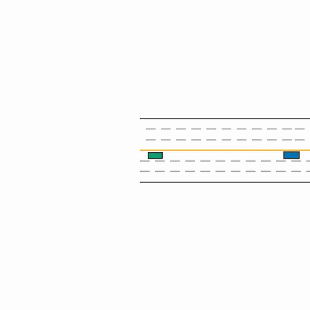

Autonomous driving and reinforcement learning
3D-First MetaDrive Baseline
A reproducible autonomous-driving study in the MetaDrive simulator. The vehicle learns from LiDAR and navigation state, with standard PPO compared against recurrent PPO with LSTM memory. The repository also includes IDM demonstrations, evaluation on unseen road scenarios, and driving replay tools.
Approach
LiDAR and navigation state · PPO and recurrent PPO · held-out road scenarios
Result
A controlled simulator study of memory and generalization for autonomous driving.

Top-down replay from the best locally reproduced PPO checkpoint on a held-out scenario.